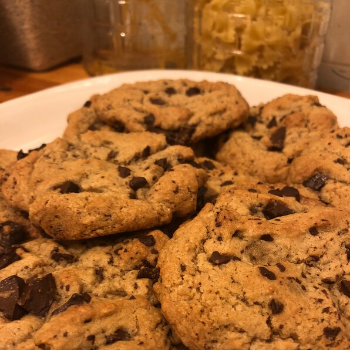

The Best Chocolate Chip Cookies

Description
The most banger chocolate chip cookies you've ever had
Ingrediants
- 2 1/4 cups all purpose flower
- 1 teaspoon baking soda
- 1/2 teaspoon salt
- 1 cup butter, softened
- 3/4 cup granulated sugar
- 3/4 cup packed brown sugar
- 1 egg
- 1 teaspoon vanilla
- 2 cups semisweet chocolate chips
Steps
- Heat oven to 375 degrees fahrenheit. In small bowl, mix flower, baking soda andn salt; set aside.
- In large bowl, beat softened butter and sugars with electric mixer on medium speed, or mix with spoon about 1 minute or until fluffy, scraping side of bowl occasionally.
- Beat in egg and vanilla until smooth. Stir in flour mixture just until blended (dough will be stiff). Stir in chocolate chips and nuts.
- Onto ungreased cookie sheets, drop dough by rounded tablespoonfuls 2 inches apart.
- Bake 8 to 10 minutes or until light brown (centers will be soft). Cool 2 minutes; remove from cookie sheet to cooling rack. Cool completely, about 30 minutes. Store covered n airtight container.